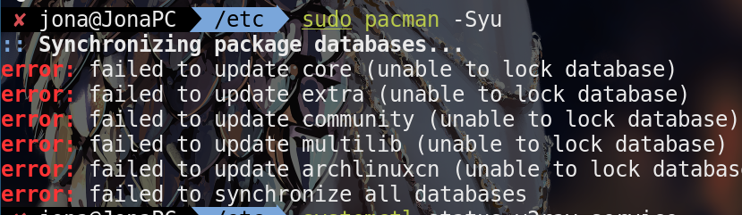

linux 使用问题记录
一. 开机启动问题
-
开机无法进入系统
问题原因: 由于NVIDIA驱动并不开源,导致其驱动对linux的支持并不好,下面这是官方的[解决方案][1],常见于deepin(开机卡logo), archlinux的的deepin桌面环境进不去
解决方案
-
[若是deepin用户在开机时将独显禁用][2]
-
使用 lspci | grep VGA 查看使用的显卡
intel 显卡驱动 pacman -S xf86-video-intel 或 pacman -S xf86-video-vesa AMD 显卡驱动 pacman -S xf86-video-AMD 英伟达 显卡驱动 pacman -S xf86-video-nv pacman -S nvidia 英伟达显卡 pacman -S nvidia-settings 图形化管理界面
笔记本双显卡安装
使用 lspci | grep -i [vga|3d] 查看自己的显卡情况 一般为 intel 和 nvida 所以使用 pacman -S xf86-video-intel nvida 使用第三方程序 bumblebee 来管理独立显卡的使用, pacman -S bumblebee mesa bbswitch 修改配置文件/etc/bumblebee/bumblebee.conf 将Driver的值设置为nvidia,来让其使用nvidia驱动然后将PMMethod的值设置为bbswitch让它使用bbswitch来进行显卡的切换 修改配置文件/etc/modprobe.d/bbswitch.conf 添加options bbswitch load_state=0 unload_state=0来设置bbswitch的状态。使用命令modprobe bbswitch来加载这个模块。 将要使用Bumblebee的用户添加到bumblebee组中， gpasswd -a username bumblebee， 并将bumblebeed服务设为开机启动， systemctl enable bumblebeed，启用它systemctl start bumblebeed。 -
-
磁盘未成功挂载无法开机
问题原因: 可能由于未正常关机造成
解决方案: 使用[fdisk][3]命令,重新扫描磁盘即可
-
详情网址
[1]https://wiki.archlinux.org/index.php/NVIDIA
[2]https://blog.csdn.net/HuaCode/article/details/83216338
[3]http://c.biancheng.net/view/891.html
二. 硬件使用问题
-
无线网卡无法启动
问题描述:archlinux或其他linux(本人仅使用过的deepin linux和majory linux, 基于debian的应该也有适用)会出现
解决方案:
-
无线网卡被硬件关闭解决方法
在终端输入rfkill list all 出现以下结果 0:ideapad_wlan: Wireless LAN
Soft blocked: no
Hard blocked:yes
1:ideapad_bluetooth: Bluetooth
Soft blocked: no
Hard blocked: yes
2:phy0: Wireless LAN S oft blocked: no
Hard blocked:no
3:hci0: Bluetooth
Soft blocked: yes
Hard blocked: no -
通过列入黑名单的方式来实现自动移出ideapad_laptop设备
- 创建/etc/modprobe.d/black_ideapad_laptop.conf文件：
sudo touch /etc/modprobe.d/black_ideapad_laptop.conf
- 编辑ideapad.conf文件：
sudo gedit /etc/modprobe.d/black_ideapad_laptop.conf- 在ideapad.conf文件中添加：
blacklist ideapad_laptop
- 关闭并保存ideapad.conf文件，移除ideapad_laptop设备：
sudo modprobe -r ideapad_laptop
- 注销重启linux系统，可以看到无线设备能够被打开，并能搜索到WiFi信号。
-
三. 软件使用过程中的问题
-
archlinux 使用pacman包管理工具安装软件时警告无法锁定数据库
问题描述:

问题原因: 同步数据库是强制停止数据库的同步,导致进程锁文件未释放
解决方案: 删除/var/lib/pacman/db.lck文件,再次进行同步即可恢复
-
baidunetdisk
问题描述: 百度网盘开机卡在logo出一直无法进入
问题原因:有可能在下载文件的过程中强行关闭了百度网盘,可能与上述pacman问题原因相同
解决:删除./local/share/baidu/*